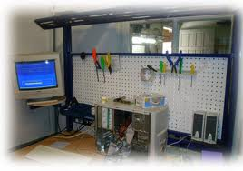

Suporte de Informática
O Técnico em Manutenção e Suporte em Informática realiza manutenção preventiva e corretiva de equipamentos de informática, identificando os principais componentes de um computador e suas funcionalidades. Identifica as arquiteturas de rede e analisa meios físicos, dispositivos e padrões de comunicação. Avalia a necessidade de substituição ou mesmo atualização tecnológica dos componentes de redes. Instala, configura e desinstala programas básicos, utilitários e aplicativos. Realiza procedimentos de becape e recuperação de dados.